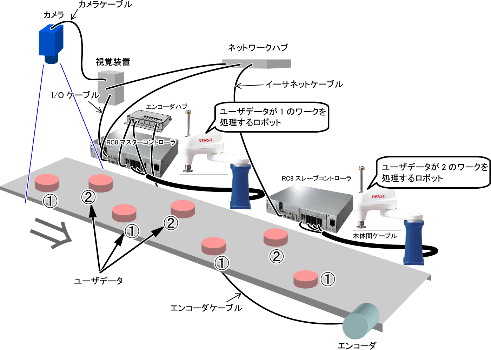

ID : 2836
TrackPrepareData
機能
ビジョンセンサが検出した複数のワークデータのうち、トラッキングバッファに既に存在するデータを削除し、下流側のデータから順に並べ直したデータセットを返します。
これは、TrackSetVisionでトラッキングバッファにセットする前に、重複データ削除と並び替えを行う関数で、戻り値が、そのままTrackSetVisionの引数になります。
このコマンドはVer.2.1.*から有効です。
構文
TrackPrepareData (コンベア番号, ワーク検出数, センサ検出座標 [, ユーザデータ [, 属性データ] ])
指定項目
- コンベア番号
-
使用するコンベア番号（1～16）を整数型データで指定します。
- ワーク検出数
-
TrackSetVisionのワーク検出数にセットする値と同じです。1度の実行でトラッキングバッファに保存するワークの個数を、整数型データで指定します。
負の値を設定すると、I/Oからのトリガ入力が不要な内部トリガモードになります。
トラッキングバッファのデータと重複するデータが見つかった場合は、戻り値では、その数を減算（負数の場合は加算）します。値 内容 正の値 ビジョンセンサが検出したワーク数を正の値で設定します。
ビジョンセンサからのI/O入力を受けて、コンベアのエンコーダ値が事前に保存されている必要があります。0 エラー 負の値 内部トリガを基に設定したいワーク数を負の値で設定します。
ビジョンセンサからのI/O入力は不要で、このコマンド実行時のコンベアのエンコーダ値が保存されます。 - センサ検出座標
-
TrackSetVisionのセンサ検出座標にセットする値と同じです。ワーク検出数分のビジョンセンサ検出座標を指定します。指定の仕方は以下の3通りです。
トラッキングバッファのデータと重複するデータが見つかった場合は、戻り値では、その座標は削除されます。また、複数のデータの場合は、戻り値では、下流側から並べ直した順になります。データ型 内容 ベクトル型 ワーク検出数が1個の場合に指定可能です。 バリアント(Variant)型の1次配列 ワーク検出数が1個以上の場合に指定可能です。
配列の各要素は、ベクトル型で設定します。ベクトル型の1次配列 ワーク検出数が1個以上の場合に指定可能です。
配列の各要素は、ベクトル型で設定します。 - ユーザデータ
-
TrackSetVisionのユーザデータにセットする値と同じです。指定の仕方は「TrackSetVison」を参照してください。
省略可能です。省略した場合は"-1"になります。負の値を入れると、省略と同じ扱いになります。
戻り値では、データの並び替えに合わせた値になります。 - 属性データ
-
TrackSetVisionの属性データにセットする値と同じです。指定の仕方は「TrackSetVison」を参照してください。
省略可能です。省略した場合は"-1"になります。
戻り値では、データの並び替えに合わせた値になります。
戻り値
| 項目 | 内容 |
|---|---|
| ワーク検出数 | TrackSetVisionのワーク検出数にセットする値。重複するデータの数を減算してあります。 |
| センサ検出座標 | TrackSetVisionのセンサ検出座標にセットする値。重複するデータは削除し、下流側から並べ直した順にセットしています。 |
| ユーザデータ | TrackSetVisionのユーザデータにセットする値。データの並び替えに合わせた値がセットされています。 |
| 属性データ | TrackSetVisionの属性データにセットする値。データの並び替えに合わせた値がセットされています。 |
指定項目にあわせて、ワーク検出数、センサ検出座標、ユーザデータ、属性データをバリアント(Variant)型で返します。
| 指定項目 | 戻り値 | |||
|---|---|---|---|---|
| ワーク検出数 | センサ検出座標 | ユーザデータ | 属性データ | |
| コンベア番号、 ワーク検出数、 センサ検出座標 | ◯ | ◯ | -1 | -1 |
| コンベア番号、 ワーク検出数、 センサ検出座標、 ユーザデータ | ◯ | ◯ | ◯ | -1 |
| コンベア番号、 ワーク検出数、 センサ検出座標、 ユーザデータ、 属性データ | ◯ | ◯ | ◯ | ◯ |
指定したセンサ検出座標が、トラッキングバッファに1個も保存できない場合は「データ数」の値が"0"で、センサ検出座標、ユーザデータ、属性データが"VT_EMPTY"になるバリアント(Variant)型データを返します。
解説
ビジョンセンサが検出した複数のワークデータのうち、トラッキングバッファに既に存在するデータを削除し、下流側のデータから順に並べ直したデータセットを返します。
これは、TrackSetVisionでトラッキングバッファにセットする前に、重複データ削除と並び替えを行う関数で、戻り値が、そのままTrackSetVisionの引数になります。
注意事項
コンベアおよび円形トラッキング専用のコマンドです。
用例
ビジョンセンサが、画像座標"x=100[pixel]", y=10[pixel]"、向き"θ=30[deg]"のワーク1を検出
Dim visPos1 As Variant
visPos1 = Array(100, 10, 30)ビジョンセンサが、画像座標"x=100[pixel]", y=200[pixel]"、向き"θ=0[deg]"のワーク2を検出
Dim visPos2 As Variant
visPos2 = Array(100, 200, 0)ビジョンセンサが、画像座標"x=10[pixel]", y=200[pixel]"、向き"θ=45[deg]"のワーク3を検出
Dim visPos3 As Variant
visPos3 = Array(10, 200, 45)ビジョンセンサで検出した3つのワークでトラッキングバッファの重複チェック
Dim visPreparePos As Variant
visPreparePos = TrackPrepareData (1,3, Array(visPos1, visPos2, visPos3), Array(1, 2, 3), Array(1, 1, 1))重複していないワークをトラッキングバッファにユーザデータと属性を指定して保存
TrackSetVision 1, visPreparePos (0), visPreparePos (1), visPreparePos (2), visPreparePos (3)事例
2台のロボットで交互にトラッキングするために、トラッキングバッファに保存するデータのユーザデータを1と2の交互に保存する方法

' センサ検出座標の取得
Dim visPos1 As Variant
visPos1 = Array(100, 10, 30)
Dim visPos2 As Variant
visPos2 = Array(100, 200, 0)
Dim visPos3 As Variant
visPos3 = Array(10, 200, 45)
' トラッキングバッファに重複データがないセンサ検出座標を取得
Dim visPreparePos As Variant
visPreparePos = TrackPrepareData (1,3, Array(visPos1, visPos2, visPos3))
' トラッキングバッファに重複データがないデータ数にあわせてユーザデータを作成
' ユーザが処理を行なう関数をCreateUserDataとして別途定義する
Dim vntUserData As Variant
vntUserData = CreateUserData(visPreparePos (0))
' トラッキングバッファにデータを保存
TrackSetVision 1, visPreparePos (0), visPreparePos (1), vntUserData
' [ユーザ記述]
' ユーザデータを設定する処理
' [out] vntUserData : ユーザデータ
Function CreateUserData( ByVal workNum As Integer ) As Variant
' --------ビジョンセンサで検出したワークのユーザデータを設定--------
CreateUserData= CreateArray(workNum, VT_I4)
End FunctionID : 2836